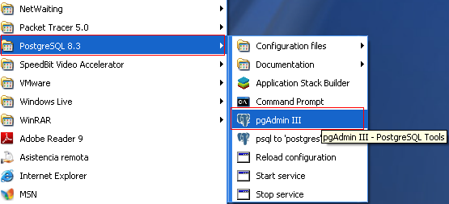
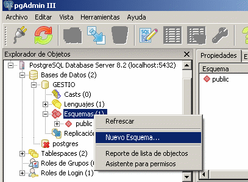
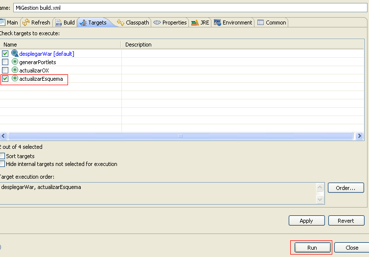

Table of Contents
Configurar OpenXava para trabajar con PostgreSQL
En esta página explicaremos de manera rápida y sencilla como configurar nuestra aplicación de OX para trabajar con Postgres, en este caso la versión de postgres es la 8.3.Comprobar el funcionamiento de la BD Postgres
Hemos de comprobar que el gestor de bases de datos Postgres esté en marcha y funcionando correctamente, que sea accesible desde nuestra máquina. La mejor forma es entrar en el pgAdmin. Si no se tiene, es necesario descargarlo e instalarlo (se obtiene de la Web de Postgres).
Una vez abierto el pgAdmin, se debemos intentar conectarnos (en caso de no poder establecer conexión no podremos continuar, debemos revisar si algo salió mal durante la instalación y si falta configurar algo para solventar este problema, pero eso está fuera del alcance de esta página).
Con el botón derecho del ratón sobre el servidor seleccionamos conectar.

A continuación escribimos la contraseña que hayamos dado para el usuario “postgres”.

Una vez dentro, creamos una base de datos, por ejemplo bdpruebas (en minúsculas) y creamos un esquema por ejemplo gestion (en minúsculas)

Por tanto vamos a trabajar en la base de datos “bdpruebas” y el esquema “gestion”
| Observaciones: NUNCA debemos poner en la base de datos Postgres los nombres de esquemas o tablas en MAYÚSCULAS. Siempre en minúsculas, ya que postgres sobre hibernate mapea los nombres de tablas y esquemas en minúsculas. |
Configurar la Base de datos en OX
Suponemos que ya hemos creado nuestro primer proyecto, según las indicaciones de la guía de referencia en su punto 2.1) Modificar archivo context.xml
En la carpeta openxava3.x/portal/conf editamos el fichero context.xml y añadimos la siguiente entrada
<Resource name="jdbc/MiGestionDS" auth="Container" type="javax.sql.DataSource" maxActive="20" maxIdle="5" maxWait="10000" username="postgres" password="mi_password_de_postgres" driverClassName="org.postgresql.Driver" url="jdbc:postgresql://localhost:5432/bdpruebas"/>Donde:
“mi_password_de_postgres” es obviamente la contraseña que usamos para acceder a Postgres.
url="jdbc:postgresql:localhost:5432/bdpruebas" es donde definimos el acceso a la base de datos, siendo “localhost” la dirección IP o nombre del servidor donde resida el gestor de base de datos, 5432 es el puerto predeterminado que usa postgres y bdpruebas es el nombre de la base de datos que creamos en Postgres.
Observaciones:
Hay que distinguir entre aquellos que trabajen arrancando el Tomcat desde fuera del Eclipse (ejecutando start-portal desde el directorio de instalación del OpenXava) y los que arranquen el Tomcat desde el Eclipse tal como se explica en WTP.
Para los primeros el fichero context.xml está en “portal/conf”.
Para los segundos en “openxaca2.X/workspace/Servers/Tomcat v5.5 Server @ localhost-config”
Si el nivel os lo permite, se aconseja trabajar dentro de Eclipse, ya que se consigue una mayor velocidad y menor cambio de pantallas. Cuanto más nos centremos en lo que hacemos, y menos cambios de pantallas tengamos, reduciremos las probabilidades de tener cometer errores!
2) Modificar el fichero “build.xml”
De manera predeterminada, cuando creamos un nuevo proyecto OX a partir del "OpenXavaPlantilla", la parte final de nuestro archivo build.xml tiene esta apariencia:<!-- Se conecta a tu base de datos y actualiza el esquema para que conincida con el actual de tu aplicación. Recuerda dar valor a la propiedad schema.path. (También puedes usar directamente la tarea ant 'hibernatetool') --> <target name="actualizarEsquema"> <ant antfile="../OpenXava/build.xml" target="updateSchemaJPA"> <property name="persistence.unit" value="junit"/> <property name="schema.path" value="PON AQUÍ LA RUTA DEL CONTROLADOR JDBC"/> </ant> </target>Debemos pues indicar la ruta donde tenemos nuestro jdbc para postgres, por ejemplo asi:
<target name="actualizarEsquema"> <ant antfile="../OpenXava/build.xml" target="updateSchemaJPA"> <property name="persistence.unit" value="junit"/> <property name="schema.path" value="../OpenXavaTest/lib/postgresql-8.3-604.jdbc3.jar"/> </ant> </target>Guardamos los cambios.
Nota: En este ejemplo el controlador jdbc (postgresql-8.3-604.jdbc3.jar) lo hemos copiado en el directorio:
Openxava-3.X\workspace\OpenXavaTest\lib
No es necesario que se copie en este directorio, sin embargo se suele colocar el controlador en un lugar común para que en otros proyectos OX usar la misma configuración en el build.xml
3) Modificar el fichero “persistence/hibernate.cfg.xml”
Tenemos que comentar o quitar si queremos tener el código más limpio, todo lo relativo a HSQLDB (que estaba etiquetado como Hypersonic) y crear nuevas definiciones para Postgres (que se ha etiquetado como Postgres), quedando de esta manera:<!-- Tomcat + PostgreSQL --> <property name="hibernate.connection.datasource">java:comp/env/jdbc/MiGestionDS</property> <property name="hibernate.dialect">org.hibernate.dialect.PostgreSQLDialect</property> <property name="hibernate.jdbc.use_get_generated_keys">false</property> <property name="hibernate.show_sql">false</property>Donde el servidor nuestro es //localhost (pero vosotros teneis que indicar el nombre de la máquina donde reside el servidor Postgres o la dirección), 5432 es el puerto que normalmente está asociado el servicio de BD Postgres y bdpruebas es el nombre de nuestra base de datos (pero vosotros tenéis que indicar la vuestra).
Además hay que cambiar todo lo relativo a usuarios y contraseñas. Tenemos que poner comentarios al famoso usuario “SA” sin contraseña, y meter el usuario “postgres” (o el que sea) con su contraseña “mi_password_de_postgres” (OJO: la que tu hayas definido o conozcas!)
4) Modificar el fichero “persistence/META-INF/persistence.xml”
<!-- Tomcat + Postgres --> <persistence-unit name="default"> <non-jta-data-source>java:comp/env/jdbc/MiGestionDS</non-jta-data-source> <class>org.openxava.session.GalleryImage</class> <properties> <property name="hibernate.dialect" value="org.hibernate.dialect.PostgreSQLDialect"/> </properties> </persistence-unit> <!-- JUnit Postgres --> <persistence-unit name="junit"> <properties> <property name="hibernate.connection.driver_class" value="org.postgresql.Driver"/> <property name="hibernate.dialect" value="org.hibernate.dialect.PostgreSQLDialect"/> <property name="hibernate.connection.url" value="jdbc:postgresql://localhost:5432/bdpruebas"/> <property name="hibernate.connection.username" value="postgres"/> <property name="hibernate.connection.password" value="mi_password_de_postgres"/> </properties> </persistence-unit>Y guardamos los cambios.
Ya practicamente hemos terminado, ahora ya solo nos queda desde el eclipse actualizar el esquema de nuestra base de datos, lo hacemos de la siguiente manera:
a) Clic contrario sobre el archivo Build.xml
b) Seleccionamos "Run As"
c) Escogemos la tercera opción "Ant Build..."
Hasta aqui esto:

d) Se abre una nueva ventana en la que debemos tildar la opción "actualizarEsquema"
e) Por último damos clic a run y listo, ya tenemos todo configurado para escribir nuestras clases OX y conectarnos a nuestra base de datos postgres.
De esta manera:

Y finalmente ya tenemos lista nuestra aplicación de OX para trabajar con PostgreSQL.